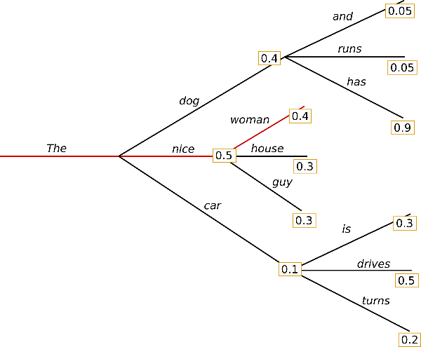

Getting Started with Bloom
Contents
Getting Started with Bloom#

Transparency, openness, and inclusivity#
While most major LLMs have been trained exclusively on English text, BLOOM’s training corpus includes 46 natural languages and 13 programming languages. This makes it useful for the many regions where English is not the main language.
BLOOM is also a break from the de facto reliance on big tech to train models. One of the main problems of LLMs is the prohibitive costs of training and tuning them. This hurdle has made 100-billion-parameter LLMs the exclusive domain of big tech companies with deep pockets. Recent years have seen AI labs gravitate toward big tech to gain access to subsidized cloud compute resources and fund their research.
The BLOOM research team has been completely transparent about the entire process of training the model. They have published the dataset, the meeting notes, discussions, and code, as well as the logs and technical details of training the model.
Zero Shot and Few Shot Learners#
Large Language Models can show good enough performance for some tasks based on just a few examples.
These examples are called prompts to a language model.
For clarity, we will define a prompting task as one that requires no fine-tuning to the base language model. This is done by inputting some prompts into the language model and asking it to return a response. The model does not see any training data for this task and is expected to generalize from these few examples.
Formatting the examples as input is referred to as prompt engineering and is a process that comes with some trial and error.
The goal of prompt engineering is to take your prompts and format them in a way, so they are easy to input into the model.
Language generation based on prompts is a brilliant concept, and it can be done in two ways, mainly - Zero Shot predictions and Few Shot predictions. Zero-Shot prediction is where the model is not trained on any data for that specific task, and Few Shot predictions are where the model is trained on a very few amount of data for that specific task. In both cases, we need some sort of prompt or seed text to get started with so that the model can generate new text from there.

Prompting on LLMs#
All you need to do is input several examples of your prompts into the generate function on either gpt2 or gpt3. You don’t even have to specify what kind of task it is, just give it some example inputs and let it figure out how to generalize from there! The only parameters required are:
text, which contains the text you want to be generated for (this should be your prompt set)length, which specifies how long you want each generated sequence returned by the modelnum_return_sequences, which specifies how many sequences you want to be returned by the model
In Zero-shot predictions, you mainly pass prompts which give a task description to the LLM to generate text. For example, for zero-shot summarization, you can present a body of text to the LLM along with an instruction for it to follow, like ‘In summary’, or ‘tldr:’, or even ‘To explain to a 5-year-old’.
In Few-Shot summarization, you can preset a few examples of text & their summary to an LLM. You can then present a text to the model and could expect the summary generated by the model. In other words, you give it a few examples vs. none. Language generation based on prompts is a brilliant concept and it is so much simpler than fine-tuning.
Zero-shot#
The model predicts the answer when provided only a description of the task. No gradient updates are performed on the model.
prompt => Translate English to French: (This is the task description)
Cheese => (this is you prompting the LLM to complete the sentence)
One-shot#
In addition to task description, you provide the model with one example of what you are expecting it to produce.
prompt => Translate English to French: (Task description for the model)
Sea Otter => loutre de mer (One example for the model to learn from)
Cheese => (providing a prompt to LLM to follow the lead)
Few-shot#
On addition to task description, the model is provided with a few examples of the task.
prompt => Translate English to French: (Task description for the model)
Sea Otter => loutre de mer (a few examples for the model to learn from)
Plush girafe => girafe poivree
Cheese => (providing a prompt to LLM to follow the lead)
from transformers import pipeline
classifier = pipeline("zero-shot-classification", model="distilgpt2")
classifier(
"One of the hottest areas of investing in recent years has been ESG",
candidate_labels=["education", "politics", "business"],
)
Some weights of the model checkpoint at distilgpt2 were not used when initializing GPT2ForSequenceClassification: ['lm_head.weight']
- This IS expected if you are initializing GPT2ForSequenceClassification from the checkpoint of a model trained on another task or with another architecture (e.g. initializing a BertForSequenceClassification model from a BertForPreTraining model).
- This IS NOT expected if you are initializing GPT2ForSequenceClassification from the checkpoint of a model that you expect to be exactly identical (initializing a BertForSequenceClassification model from a BertForSequenceClassification model).
Some weights of GPT2ForSequenceClassification were not initialized from the model checkpoint at distilgpt2 and are newly initialized: ['score.weight']
You should probably TRAIN this model on a down-stream task to be able to use it for predictions and inference.
Failed to determine 'entailment' label id from the label2id mapping in the model config. Setting to -1. Define a descriptive label2id mapping in the model config to ensure correct outputs.
Using pad_token, but it is not set yet.
Tokenizer was not supporting padding necessary for zero-shot, attempting to use `pad_token=eos_token`
{'sequence': 'One of the hottest areas of investing in recent years has been ESG',
'labels': ['business', 'politics', 'education'],
'scores': [0.37581318616867065, 0.31898653507232666, 0.3052002489566803]}
Zero Shot Reasoners and Chain-of-Thought#
The paper from University of Tokyo and Google Brain team suggests that LLMs have fundamental zero-shot capabilities in high-level broad cognitive tasks and that these capabilities can be extracted by simple Chain-of-Thought (or CoT) prompting.
Another paper by Google Brain team has further investigated the CoT prompting. They noted that by generating a chain-of-thought (or a series of intermediate reasoning steps) LLMs significantly improve their ability to perform complex reasoning. Their experiments on three large language models have shown that chain-of-thought prompting improves performance on a range of arithmetic, common sense, and symbolic reasoning tasks.
One exmaple:
Q: Roger has 5 tennis balls. He buys 2 more cans of tennis balls. Each can has 3 tennis balls. How many tennis balls does he have now?
A: Roger started with 5 balls. 2 cans of 3 tennis balls each is 6 tennis balls. 5 + 6 = 11. The answer is 11.
Additionally:
Q: The cafeteria had 23 apples. If they used 20 to make lunch and bought 6 more, how many apples do they have
A: The cafeteria had 23 apples originally. They used 20 to make lunch. So they had 23 - 20 = 3. They bought 6 more apples, so they have 3 + 6 = 9. The answer is 9.
Chain of thought reasoning allows models to decompose complex problems into intermediate steps that are solved individually. Moreover, the language-based nature of chain of thought makes it applicable to any task that a person could solve via language. We find through empirical experiments that chain of thought prompting can improve performance on various reasoning tasks, and that successful chain of thought reasoning is an emergent property of model scale.
Decoding / search strategies#
How to generate text - using different decoding methods for language generation with Transformers by Patrick von Platen (Huggingface)
In recent years, there has been an increasing interest in open-ended language generation thanks to the rise of LLMs trained on millions of documents, such as GPT2, XLNet, OpenAi-GPT, CTRL, TransfoXL, XLM, Bart, T5, GPT3, and BLOOM.
Such models have achieved promising results on several generation tasks, including open-ended dialogue, summarization, and story generation.
For these models, better decoding methods have played an important role.
Auto-regressive language generation is based on the assumption that the text being generated can be decomposed into a sequence of subparts. Each part is dependent on the previous parts, thus we can use an auto-regressive decoder to generate text one token at a time based on its predecessors.
\(W_0\) being the initial context word sequence. The length \(T\) of the word sequence is usually determined on-the-fly and corresponds to the timestep \(t=T\) the EOS token is generated from \(P(w_{t} | w_{1: t-1}, W_{0})\).
import tensorflow as tf
from transformers import TFGPT2LMHeadModel, GPT2Tokenizer
tokenizer = GPT2Tokenizer.from_pretrained("gpt2")
# add the EOS token as PAD token to avoid warnings
model = TFGPT2LMHeadModel.from_pretrained("gpt2", pad_token_id=tokenizer.eos_token_id)
All model checkpoint layers were used when initializing TFGPT2LMHeadModel.
All the layers of TFGPT2LMHeadModel were initialized from the model checkpoint at gpt2.
If your task is similar to the task the model of the checkpoint was trained on, you can already use TFGPT2LMHeadModel for predictions without further training.
Greedy Search#
Greedy search simply selects the word with the highest probability as its next word: \(w_t = argmax_{w}P(w | w_{1:t-1})\) at each timestep \(t\).
Starting from the word “The” the algorithm greedily chooses the next word of highest probability “nice” and so on, so that the final generated word sequence is (“The”, “nice”, “woman”) having an overall probability of \(0.5 \times 0.4 = 0.2\).

Generate word sequences using GPT2 on the context (“I”,”enjoy”,”walking”,”with”,”my”,”cute”,”dog”).
# encode context the generation is conditioned on
input_ids = tokenizer.encode('I enjoy studying deep learning for NLP',
return_tensors='tf')
# generate text until the output length (which includes the context length) reaches 50
greedy_output = model.generate(input_ids, max_length=100)
print("Output:\n" + 100 * '-')
print(tokenizer.decode(greedy_output[0], skip_special_tokens=True))
Output:
----------------------------------------------------------------------------------------------------
I enjoy studying deep learning for NLP, but I'm not sure if I can do it in a way that is as good as the NLP. I'm not sure if I can do it in a way that is as good as the NLP.
I'm not sure if I can do it in a way that is as good as the NLP. I'm not sure if I can do it in a way that is as good as the NLP. I'm not sure
The generated words following the context are reasonable, but the model quickly starts repeating itself! This is a very common problem in language generation in general and seems to be even more so in greedy and beam search.
The major drawback of greedy search though is that it misses high probability words hidden behind a low probability word as can be seen in our sketch above:
Beam search#
Beam search reduces the risk of missing hidden high probability word sequences by keeping the most likely num_beams of hypotheses at each time step and eventually choosing the hypothesis that has the overall highest probability.
Beam search with
num_beams=2:At time step 1, besides the most likely hypothesis (“The”,”nice”), beam search also keeps track of the second most likely one (“The”,”dog”).
At time step 2, beam search finds that the word sequence (“The”,”dog”,”has”), has with \(0.36\), a higher probability than (“The”,”nice”,”woman”), which has \(0.2\).
It has found the most likely word sequence in our toy example!
Beam search will always find an output sequence with higher probability than greedy search, but is not guaranteed to find the most likely output.
Set
num_beams > 1andearly_stopping=Trueso that generation is finished when all beam hypotheses reached the EOS token
# activate beam search and early_stopping
beam_output = model.generate(
input_ids,
max_length=100,
num_beams=5,
early_stopping=True,
)
print("Output:\n" + 100 * '-')
print(tokenizer.decode(beam_output[0], skip_special_tokens=True))
Output:
----------------------------------------------------------------------------------------------------
I enjoy studying deep learning for NLP, but I don't think it's the best way to learn NLP. I think it's the best way to learn NLP. I think it's the best way to learn NLP. I think it's the best way to learn NLP. I think it's the best way to learn NLP. I think it's the best way to learn NLP. I think it's the best way to learn NLP. I think it's
While the result is arguably more fluent, the output still includes repetitions of the same word sequences.
A simple remedy is to introduce n-grams penalties as introduced by Paulus et al. (2017) and Klein et al. (2017).
The most common n-grams penalty makes sure that no n-gram appears twice by manually setting the probability of next words that could create an already seen n-gram to 0.
Set
no_repeat_ngram_size=2so that no 2-gram appears twice
# set no_repeat_ngram_size to 2
beam_output = model.generate(
input_ids,
max_length=100,
num_beams=5,
no_repeat_ngram_size=2,
early_stopping=True,
)
print("Output:\n" + 100 * '-')
print(tokenizer.decode(beam_output[0], skip_special_tokens=True))
Output:
----------------------------------------------------------------------------------------------------
I enjoy studying deep learning for NLP, but I don't think it's the best way to do it.
In this post, I'm going to show you how you can use Deep Learning to build a neural network that can be used in a variety of applications. The goal is to create a machine learning system that is able to learn from the input data, and then use that data to train the system on the output data. In this case, we'll be using a simple neural
Looks much better! We can see that the repetition does not appear anymore.
Nevertheless, n-gram penalties have to be used with care.
An article generated about the city New York should not use a 2-gram penalty or otherwise, the name of the city would only appear once in the whole text!
We can compare the top beams after generation and choose the generated beam that fits our purpose best.
Set the parameter
num_return_sequencesto the number of highest scoring beams that should be returned.Make sure that
num_return_sequences <= num_beams!
# set return_num_sequences > 1
beam_outputs = model.generate(
input_ids,
max_length=100,
num_beams=5,
no_repeat_ngram_size=2,
num_return_sequences=5,
early_stopping=True,
)
# now we have 3 output sequences
print("Output:\n" + 100 * '-')
for i, beam_output in enumerate(beam_outputs):
print("{}: {}".format(
i, tokenizer.decode(beam_output, skip_special_tokens=True)))
Output:
----------------------------------------------------------------------------------------------------
0: I enjoy studying deep learning for NLP, but I don't think it's the best way to do it.
In this post, I'm going to show you how you can use Deep Learning to build a neural network that can be used in a variety of applications. The goal is to create a machine learning system that is able to learn from the input data, and then use that data to train the system on the output data. In this case, we'll be using a simple neural
1: I enjoy studying deep learning for NLP, but I don't think it's the best way to do it.
In this post, I'm going to show you how you can use Deep Learning to build a neural network that can be used in a variety of applications. The goal is to create a machine learning system that is able to learn from the input data, and then use that data to train the system on the output data. In this case, we'll be using a deep neural
2: I enjoy studying deep learning for NLP, but I don't think it's the best way to do it.
In this post, I'm going to show you how you can use Deep Learning to build a neural network that can be used in a variety of applications. The goal is to create a machine learning system that is able to learn from the input data, and then use that data to train the system on the output data. In this case, we'll be building a deep neural
3: I enjoy studying deep learning for NLP, but I don't think it's the best way to do it.
In this post, I'm going to show you how you can use Deep Learning to build a neural network that can be used in a variety of applications. The goal is to create a machine learning system that is able to learn from the input data, and then use that data to train the system on the output data. In this case, we'll be using the neural networks
4: I enjoy studying deep learning for NLP, but I don't think it's the best way to do it.
In this post, I'm going to show you how you can use Deep Learning to build a neural network that can be used in a variety of applications. The goal is to create a machine learning system that is able to learn from the input data, and then use that data to train the system on the output data. In this case, we'll be using the Deep Neural
The five beam hypotheses are only marginally different to each other - which should not be too surprising when using only 5 beams.
In open-ended generation, a couple of reasons have recently been brought forward why beam search might not be the best possible option:
Beam search can work very well in tasks where the length of the desired generation is more or less predictable as in machine translation or summarization.
But this is not the case for open-ended generation where the desired output length can vary greatly, e.g. dialog and story generation.
We have seen that beam search heavily suffers from repetitive generation.
This is especially hard to control with n-gram- or other penalties in story generation since finding a good trade-off between forced “no-repetition” and repeating cycles of identical n-grams requires a lot of finetuning.
High quality human language does not follow a distribution of high probability next words.
In other words, as humans, we want generated text to surprise us and not to be boring/predictable. (Ari Holtzman et al., 2019)

Sampling#
Sampling means randomly picking the next word \(w_t\) according to its conditional probability distribution:
The following graphic visualizes language generation when sampling.

Language generation using sampling is not deterministic anymore. The word (“car”) is sampled from the conditioned probability distribution \(P(w | \text{"The"})\), followed by sampling (“drives”) from \(P(w | \text{"The"}, \text{"car"})\).
Set
do_sample=Trueand deactivate Top-K sampling viatop_k=0.
# set seed to reproduce results. Feel free to change the seed though to get different results
tf.random.set_seed(0)
# activate sampling and deactivate top_k by setting top_k sampling to 0
sample_output = model.generate(
input_ids,
do_sample=True,
max_length=100,
top_k=0,
)
print("Output:\n" + 100 * '-')
print(tokenizer.decode(sample_output[0], skip_special_tokens=True))
Output:
----------------------------------------------------------------------------------------------------
I enjoy studying deep learning for NLP and geometric singularities within the matrix. It really boosts all visualization to reach newer paradigms.
Future Machine Learning
We think that machine learning is next-generation of image-based image inference and image processing, will enable us to help predict large-scale global and specific markets in deep learning, continue to deploy algorithms for community-based action network AI, and remove the initial bottleneck that appears to cluster high value data too quickly internally to legacy
Interesting! The text seems alright - but when taking a closer look, it is not very coherent.
Some words don’t sound like they were written by a human.
That is the big problem when sampling word sequences: The models often generate incoherent gibberish, cf. Ari Holtzman et al. (2019).
A trick is to make the distribution \(P(w|w_{1:t-1})\) sharper (increasing the likelihood of high probability words and decreasing the likelihood of low probability words) by lowering the so-called
temperatureof the softmax.

The conditional next word distribution of step t=1t=1 becomes much sharper leaving almost no chance for word (“car”) to be selected.
Cool down the distribution in the library by setting
temperature=0.7.
# set seed to reproduce results. Feel free to change the seed though to get different results
tf.random.set_seed(0)
# use temperature to decrease the sensitivity to low probability candidates
sample_output = model.generate(
input_ids,
do_sample=True,
max_length=100,
top_k=0,
temperature=0.7,
)
print("Output:\n" + 100 * '-')
print(tokenizer.decode(sample_output[0], skip_special_tokens=True))
Output:
----------------------------------------------------------------------------------------------------
I enjoy studying deep learning for NLP, and I often hear similar comments from the people who are interested in NLP. I've recently been asked how my NLP training was affected by the NLP training I did in 2015. I'm trying to figure out why.
I would like to share the following:
1. The impact of training on my learning
The main part of my training was to learn a sentence structure to get more sentences. I was given a few
There are less weird n-grams and the output is a bit more coherent now.
While applying temperature can make a distribution less random, in its limit, when setting
temperature\(\to 0\), temperature scaled sampling becomes equal to greedy decoding and will suffer from the same problems as before.
Top-K Sampling#
In Top-K sampling, the K most likely next words are filtered and the probability mass is redistributed among only those K next words. GPT2 adopted this sampling scheme, which was one of the reasons for its success in story generation.

Having set \(K = 6\), in both sampling steps we limit our sampling pool to 6 words.
While the 6 most likely words, defined as \(V_{\text{top-K}}\) encompass only two-thirds of the whole probability mass in the first step, it includes almost all of the probability mass in the second step.
Nevertheless, we see that it successfully eliminates the rather weird candidates (“not”, “the”, “small”, “told”) in the second sampling step.
Let’s see how Top-K can be used in the library by setting top_k=50:
# set seed to reproduce results. Feel free to change the seed though to get different results
tf.random.set_seed(0)
# set top_k to 50
sample_output = model.generate(
input_ids,
do_sample=True,
max_length=100,
top_k=50,
)
print("Output:\n" + 100 * '-')
print(tokenizer.decode(sample_output[0], skip_special_tokens=True))
Output:
----------------------------------------------------------------------------------------------------
I enjoy studying deep learning for NLP tasks at a relatively quick pace – it allows me to focus primarily on an important task. I found myself needing to do several key tasks in order to gain access to many data types and features of my NLP work. Although I would normally not do them, I found it easy as these tasks were very easy to achieve.
One of the key objectives I would like to work on in order to get to a place where my NLP will be as
The text is arguably the most human-sounding text so far.
One concern with Top-K sampling is that it does not dynamically adapt the number of words that are filtered from the next word probability distribution \(P(w|w_{1:t-1})\).
This can be problematic as some words might be sampled from a very sharp distribution (distribution on the right in the graph above), whereas others from a much more flat distribution (distribution on the left in the graph above).
In step \(t=1\), Top-K eliminates the possibility to sample (“people”,”big”,”house”,”cat”), which seem like reasonable candidates.
On the other hand, in step \(t=2\) the method includes the arguably ill-fitted words (“down”,”a”) in the sample pool of words.
Thus, limiting the sample pool to a fixed size \(K\) could endanger the model to produce gibberish for sharp distributions and limit the model’s creativity for flat distribution.
This intuition led Ari Holtzman et al. (2019) to create Top-p- or nucleus-sampling.
Decoding / search strategies for better responses#
Greedy Search
simply chooses the next word at each timestep t+1 that has the highest predicted probability of following the word at t.
One of the main issues here is that greedy search will miss words with a high probability at t+1 if it is preceded by a word with a low probability at t.
Beam Search
keeps track of the n-th (num_beams) most likely word sequences and outputs the most likely sequence.
Sounds great, but this method breaks down when the output length can be highly variable — as in the case of open-ended text generation.
Both greedy and beam search also produce outputs whose distribution does not align very well with the way humans might perform the same task (i.e. both are liable to produce fairly repetitive, boring text).
Sampling With Top-k + Top-p
a combination of three methods.
By sampling, we mean that the next word is chosen randomly based on its conditional probability distribution (von Platen, 2020).
In Top-k, we choose the k most likely words, and then redistribute the probability mass amongst them before the next draw.
Top-p adds an additional constraint to top-k, in that we’re choosing from the smallest set of words whose cumulative probability exceed p.
Bloom Examples#
from ekorpkit import eKonf
from ekorpkit.models.bloom.demo import BloomDemo
import os
demo = BloomDemo()
print(demo.TRANSFORMERS_CACHE)
demo.init_model()
INFO:ekorpkit.base:Loaded .env from /workspace/projects/ekorpkit-book/config/.env
/workspace/data/tbts/.cache/huggingface/transformers
cfg = eKonf.compose("model/bloom=demo")
demo = eKonf.instantiate(cfg)
demo.init_model()
prompt = "One of the hottest areas of investing in recent years has been ESG: "
promtt += "the use of environmental, social, and governance criteria to evaluate possible investments."
result_length = 100
inputs = tokenizer(prompt, return_tensors="pt")